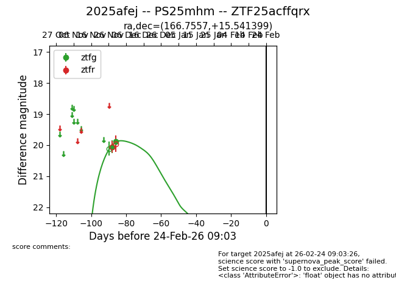
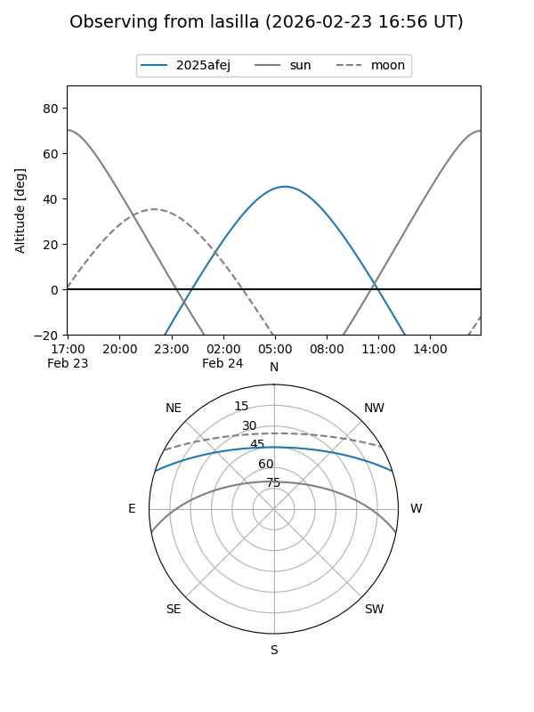
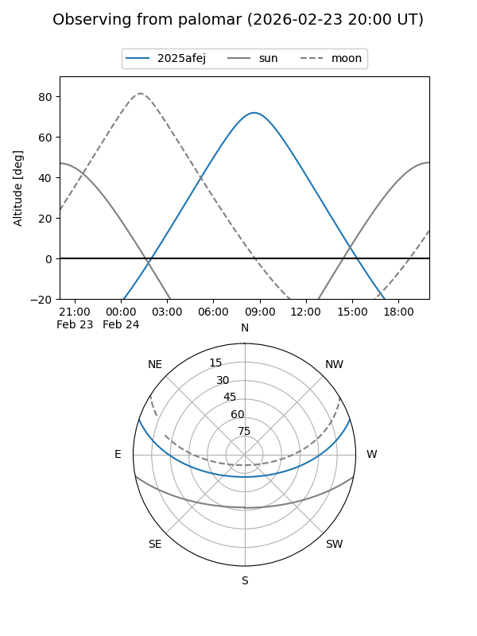
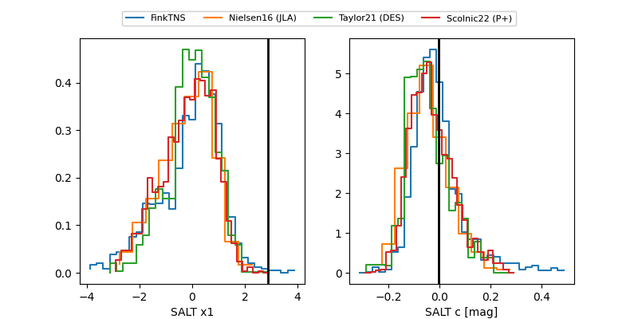

2025afej
Target 2025afej at 2025-12-31 16:59
Aliases and brokers:
FINK:
Lasair:
ALeRCE:
TNS:
YSE:
alt names
ZTF25acffqrx (ztf,fink_ztf)
2025afej (tns,yse)
Coordinates:
equatorial (ra, dec) = 166.7557,+15.54140
equatorial (HMS+DMS) = 11:07:01.36,+15:32:29.04
galactic (l, b) = (233.1407,+63.14597)
Flags:
Photometry:
last ztfg=19.88
2 ztfg detections
Lightcurve

Visibility


Additional plots
